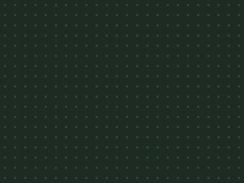

贪吃蛇
五次课做出一个完整的街机游戏——先玩成品 → 拆解 → 自己试 → 卡住才看参考做法。上课请用 放映版；本页是全文与进度。
一、开课之前
先玩 1 分钟
👨👩👦 一起 · 先玩 1 分钟
先把成品玩一遍——你接下来五次课，就是要亲手做出它。
游戏解剖图
👨👩👦 一起 · 游戏解剖图（自上而下）
整个游戏 = 五大模块，五次课各做一块：
第 1 课
第 2 课
第 3 课
第 4 课
第 5 课
素材清单
👨👩👦 一起 · 素材
三个角色：蛇头、蛇身、食物——素材包全有。

背景素材包自带课程进度表
👨👩👦 一起 · 课程进度表
二、五次课
第 1 次 · 格子世界
👨👩👦 一起 · 本章目标
👨👩👦 一起 · 效果与拆解
- 新学格子尺寸— 一格 = 20 像素
- 新学节拍— 等待 0.25 秒
- 新学穿墙回绕— 出右进左
- 已有重复执行— 每帧？不——每拍
👦 孩子自己 · 自己试试（先别翻答案）
先自己试 10 分钟：素材包里全有，先导入摆好；想怎么做就怎么做，改坏了绿旗能复原；卡住超过 5 分钟，再看下面的参考做法。
👨👩👦 一起 · 概念 · 格子世界
一格 = 20 像素的地砖
- x 加 20 = 向右一格；y 加 20 = 向上一格
- 格子中心坐标都是 20 的倍数加偏移
- 俄罗斯方块用同一套格子——这里学会了那边直接用
👨👩👦 一起 · 参考做法（卡住才看）
- 蛇头就位，向右走格
当绿旗被点击 移到 x: (-100) y: (0) 重复执行 将x坐标增加 (20) 等待 (0.25) 秒🧰 积木在：运动控制✅ 蛇头一格一格向右挪，像上了发条 - 出右边，从左边回来
如果 <(x 坐标) > (220)> 那么 将x坐标设为 (-220)本课先"穿墙"，第 4 课再改成撞墙出局✅ 走出右边界，从左边重新进场
👨👩👦 一起 · 验收
- 🔲 匀速一格一格走
- ↔️ 出右回左不断头
- ⏱ 拍子稳定不忽快忽慢
👨👩👦 一起 · 试一试
节拍与格宽
🧑 家长先看 · 常见错误
格子两病
👦 孩子自己 · 进阶挑战 · 三选一
外观
声音
控制
👦 孩子自己 · 课后回顾
第 2 次 · 掉头的艺术
👨👩👦 一起 · 本章目标
👨👩👦 一起 · 效果与拆解
- 新学方向数— 一个变量当方向盘
- 新学禁止反向— 「不成立」挡掉 180°
- 已有格子移动— 四段"如果"分头行动
👦 孩子自己 · 自己试试（先别翻答案）
先自己试 10 分钟：素材包里全有，先导入摆好；想怎么做就怎么做，改坏了绿旗能复原；卡住超过 5 分钟，再看下面的参考做法。
👨👩👦 一起 · 概念 · 方向数
方向数 = 方向盘
- 为什么不放四段移动脚本：会同时触发
- 反向检查：朝右(2)时按左(4)无效
- "不成立"积木=不是这种情况
👨👩👦 一起 · 参考做法（卡住才看）
- 按键只改方向盘
当按下 [上箭头] 键 如果 <<(方向数) = (3)> 不成立> 那么 将 [方向数] 设为 (1) 当按下 [右箭头] 键 如果 <<(方向数) = (4)> 不成立> 那么 将 [方向数] 设为 (2)🧰 积木在：事件变量运算下、左照样子补全（下 ≠ 1，左 ≠ 2）——四段事件帽并排放✅ 按方向键蛇头转向；朝右时按左没反应 - 移动只看方向盘
如果 <(方向数) = (1)> 那么 将y坐标增加 (20) 如果 <(方向数) = (2)> 那么 将x坐标增加 (20) 如果 <(方向数) = (3)> 那么 将y坐标增加 (-20) 如果 <(方向数) = (4)> 那么 将x坐标增加 (-20) 等待 (0.25) 秒替换第 1 课的"向右走"那两行；回绕判断保留并补齐四边（进阶挑战）✅ 四个方向自由走，一格一格不乱
👨👩👦 一起 · 验收
- 🧭 四键都能转
- 🚫 永不 180 掉头
- 🔲 依旧一格一格
👨👩👦 一起 · 试一试
手感实验
🧑 家长先看 · 常见错误
转向两病
👦 孩子自己 · 进阶挑战 · 三选一
事件
声音
外观
👦 孩子自己 · 课后回顾
第 3 次 · 越吃越长
👨👩👦 一起 · 本章目标
👨👩👦 一起 · 效果与拆解
- 新学列表=日记— 头走一步记一行
- 新学克隆身体— 30 节候命，各有节号
- 新学食物随机— 随机格子 + 换位
- 已有格子公式— 坐标↔格号互换
👦 孩子自己 · 自己试试（先别翻答案）
先自己试 10 分钟：素材包里全有，先导入摆好；想怎么做就怎么做，改坏了绿旗能复原；卡住超过 5 分钟，再看下面的参考做法。
👨👩👦 一起 · 概念 · 列表当日记
列表 = 蛇的日记本
- 两条列表：身体横 记横、身体竖 记竖
- 日记超长就撕掉最后一行（删除末项）
- 身体克隆体的节号用"仅适用于当前角色"变量
👨👩👦 一起 · 参考做法（卡住才看）
- 建两条日记 + 身长
全局列表 身体横 / 身体竖，全局变量 身长=3、分数=0；舞台绿旗：分数归零、身长设 3、两条列表「删除全部项目」✅ 开局：空日记、身长 3
- 蛇头每步写日记
在 [身体横] 的第 (1) 项前插入 (x 坐标) 在 [身体竖] 的第 (1) 项前插入 (y 坐标) 如果 <([身体横] 的项目数) > (身长)> 那么 删除 [身体横] 的第 ([身体横] 的项目数) 项 删除 [身体竖] 的第 ([身体竖] 的项目数) 项 等待 (0.25) 秒🧰 积木在：变量（"在第 n 项前插入"也在变量类别）加在主循环"移动之后、等待之前"——先走、再记、再等✅ 监视窗里日记一行行往下长，超过身长就裁掉 - 蛇身：30 节候命
当绿旗被点击 隐藏 将 [节号] 设为 (0) 重复执行 (30) 次 将 [节号] 增加 (1) 克隆 [自己]「节号」选仅适用于当前角色——每个分身记住自己是第几节✅ 30 个隐形分身待命 - 每节每拍对日记入座
当作为克隆体启动时 重复执行 如果 <([身体横] 的项目数) < (节号)> 那么 隐藏 否则 显示 移到 x: ([身体横] 的第 (节号) 项) y: ([身体竖] 的第 (节号) 项)✅ 蛇身排成长队，跟蛇头走出完美队形 - 吃到食物：长一节
如果 <碰到 [食物]?> 那么 将 [身长] 增加 (1) 将 [分数] 增加 (1) 播放声音 [chomp] 将 [食物列] 设为 (在 (-10) 和 (10) 之间取随机数) 将 [食物行] 设为 (在 (-8) 和 (8) 之间取随机数) 移到 x: ((食物列) * (20)) y: ((食物行) * (20))加在蛇头主循环里；随机数乘 20 再取整落格，食物永远在格子中心✅ 吃一口：分数 +1、身体长一节、食物跳到新格
👨👩👦 一起 · 验收
- 🍎 吃一口长一节
- 🟩 队形笔直不掉队
- ♻️ 绿旗重开：3 节从头来
这是六关里最"数据"的一课——身体其实不存在，存在的是日记。
👨👩👦 一起 · 试一试
身体的脾气
🧑 家长先看 · 常见错误
身体三病
👦 孩子自己 · 进阶挑战 · 三选一
外观
控制
控制
👦 孩子自己 · 课后回顾
第 4 次 · 咬到自己
👨👩👦 一起 · 本章目标
👨👩👦 一起 · 效果与拆解
- 新学出界判负— 拆掉穿墙回绕
- 新学身体碰头— 分身侧检测
- 新学跳过头三节— 防贴身误判
- 已有广播结束— 打砖块同款
👦 孩子自己 · 自己试试（先别翻答案）
先自己试 10 分钟：素材包里全有，先导入摆好；想怎么做就怎么做，改坏了绿旗能复原；卡住超过 5 分钟，再看下面的参考做法。
👨👩👦 一起 · 参考做法（卡住才看）
- 拆穿墙，装真墙
如果 <<(x 坐标) > (220)> 或 <<(x 坐标) < (-220)> 或 <<(y 坐标) > (170)> 或 <(y 坐标) < (-170)>>>> 那么 广播 [游戏结束] 停止 [全部脚本]删掉第 1 课的回绕判断，换成这段——四个边用"或"并联✅ 撞上任何一边，全场停 - 身体那侧盯梢
如果 <<(节号) > (3)> 与 <碰到 [蛇头]?>> 那么 广播 [游戏结束] 停止 [全部脚本]塞进蛇身克隆体"重复执行"的肚子里，和入座判断并排✅ 头咬到第 4 节之后的身体，立刻出局 - 结局一句话
当接收到 [游戏结束] 移到最 [前面] 说 [咬到自己了 · 按绿旗再来] (3) 秒
✅ 出局定格 + 重开提示
👨👩👦 一起 · 验收
- 🧱 四边撞墙判负
- 🐍 咬到身体判负（第 4 节起）
- ↩️ 绿旗复原
👨👩👦 一起 · 试一试
判定实验
🧑 家长先看 · 常见错误
出局两坑
👦 孩子自己 · 进阶挑战 · 三选一
外观
变量
变量
👦 孩子自己 · 课后回顾
第 5 次 · 越吃越快
👨👩👦 一起 · 本章目标
👨👩👦 一起 · 效果与拆解
- 新学拍速变量— 等待也听变量的
- 新学公式化难度— 每 3 分 −0.02 秒
- 新学最高分— 谁大留谁
- 已有发布会— 三句话
👦 孩子自己 · 自己试试（先别翻答案）
先自己试 10 分钟：素材包里全有，先导入摆好；想怎么做就怎么做，改坏了绿旗能复原；卡住超过 5 分钟，再看下面的参考做法。
👨👩👦 一起 · 概念 · 难度公式
难度 = 一个会变的等待
- 拍速 = 0.25 − 分数 × 0.02（下限 0.1）
- 公式比分档"如果"更干净
- 下限保底：再快也没法玩就没意思了
👨👩👦 一起 · 参考做法（卡住才看）
- 等待听变量的
当绿旗被点击 将 [拍速] 设为 (0.25)
主循环里"等待 (0.25) 秒"换成"等待 (拍速) 秒"✅ 一切照旧——但现在节奏可控 - 每口快一点
将 [拍速] 设为 ((0.25) - ((分数) * (0.02))) 如果 <(拍速) < (0.1)> 那么 将 [拍速] 设为 (0.1)放在"吃到食物"分支里——吃一口重算一次✅ 分数涨，蛇肉眼可见地变快 - 最高分：谁大留谁
当接收到 [游戏结束] 如果 <(分数) > (最高分)> 那么 将 [最高分] 设为 (分数) 说 (连接 [本局 ] 和 (分数)) (2) 秒最高分变量别在绿旗里清零——它是跨越局的存在✅ 破纪录时最高分被刷新 - 发布会：三句话
1️⃣ 我做了什么2️⃣ 最难在哪3️⃣ 想怎么改✅ 打一局最高分给全家看
👨👩👦 一起 · 验收
- ⚡ 分数越高蛇越快（有下限）
- 🥇 最高分跨局保留
- 🎤 发布会讲满三句
贪吃蛇完成——下一关，守住你的基地。
👨👩👦 一起 · 试一试
节奏曲线
🧑 家长先看 · 常见错误
节奏两坑
👦 孩子自己 · 进阶挑战 · 三选一
变量
控制
事件
👦 孩子自己 · 课后回顾
三、本作总结
- 第 1 课🔲 坐标·格子
- 第 2 课🧭 变量·方向
- 第 3 课🗄️ 列表
- 第 4 课🎯 侦测·碰到
- 格子世界：一步一格，先立规矩再谈速度
- 列表 = 蛇的日记：头走一步记一行
- 身体是数据不是角色：日记长，蛇就长